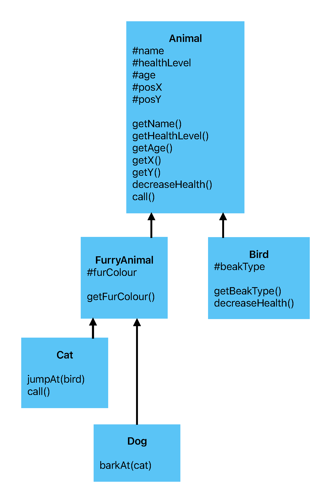

There is no visual output for this exercise. Use the browser console.
Your sketch:
We are continuing the animal theme today. You will be creating a hierarchy of classes to represent different animals as shown in the diagram below. This exercise will not have any visual output—you will need to check your code using the browser console.
sketch.js contains a different version of an Animal class, and a
child class, FurryAnimal. Take a moment to
read the code. Familiarise yourself with the class attributes and methods in both
classes as you will need these when implementing more inheriting classes.
BirdAdd a new subclass (another term for a child class) of Animal called Bird, which has
an additional private attribute #beakType (string). Add a getter for #beakType called getBeakType().
The parent class has a method called decreaseHealth(), which reduces the animal's health level
by 1. Override this method in the Bird class. The Bird version of decreaseHealth() should
reduce the health level by a larger amount (e.g. 5).
FurryAnimalAdd two new classes called Cat and Dog. Both classes should be
subclasses of FurryAnimal. These classes do not have any new attributes but they
will need some new methods.
In the Cat class:
jumpAt(), which takes one parameter, a bird. In this method, the cat should jump at the bird by moving to its location, which should cause the bird's health to decrease.call() method so that it simply returns "meow" for cats.In the Dog class, add a new method called barkAt(), which takes one parameter, a cat. If the cat is too close to the dog (you can decide how close is too close), print "Woof!" or something similar to the console.
A check file is provided for this exercise. It will make sure your code matches the specification above. However, it's always good to try out your code yourself. Try creating instances of
each class in the setup() function provided and test them by calling methods and printing the results to the console. There are two
examples of this in the code already.
Class hierarchy:
You should not need to make any changes to the existing classes!
It is a good idea to have the example code from lecture on hand as all tasks are very similar to the examples covered in lecture.
To implement the Bird method decreaseHealth(), you need to change the value of the attribute #healthLevel. As this
attribute is private to the parent class and therefore cannot be accessed directly in Bird, consider how you can
call the super class (parent class) version of the decreaseHealth() method to achieve the desired result.
You may find the p5.js dist() function helpful when implementing the Dog method barkAt().